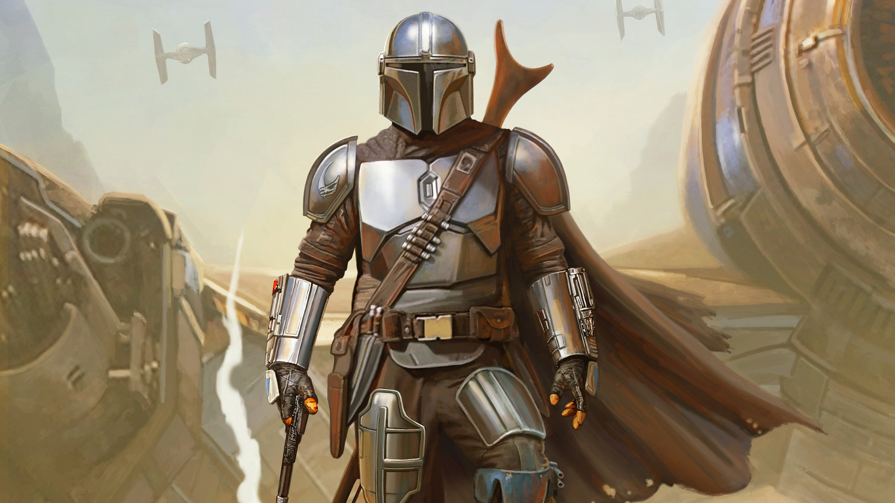
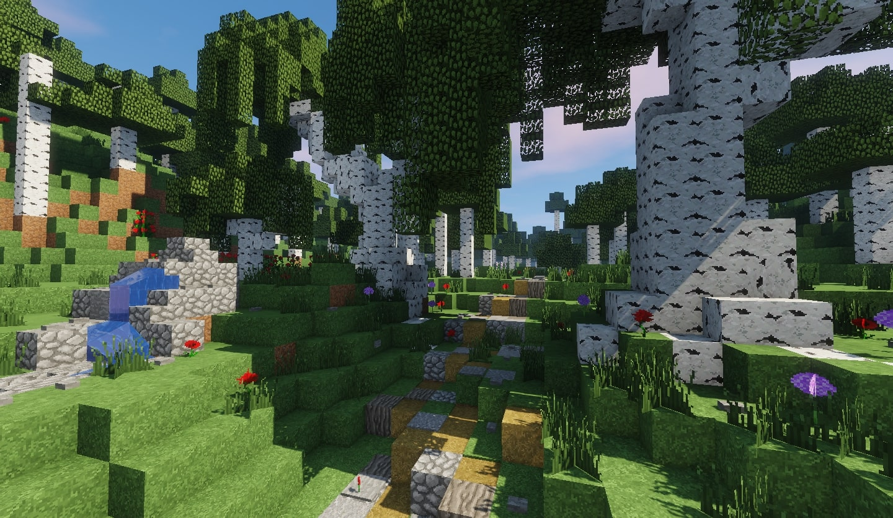

ABOUT ME
Welcome to my slice of the internet!
I'm SyntaxBreak (Stupid, I know.) a 13 y/o highschool student in Sydney, Australia.
Typing SyntaxBreak or SyntaxBreakRBLX on most social media (& Chess.com) will result with me.
My interests include programming, playing video games, cooking and generally things that require little physical effort.
I often exist next to multiple electronics, clicking away at my keyboard. Introduced to the world of programming at the young age of 8 or 9, when I went to a "class" called IgniterSpace.
Since then I've started learning Roblox Game Development (Check out my channel)
and started (rudimentary) web dev on freeCodeCamp.org at the beginning of 2023.
I started learning Roblox Development from @AlvinBlox with his "How to make a Game" series,
every time I tried I always messed up at the last episode. Since then I've had many attempts at making my own game, self-evidently none of them were finished.
More amazing Roblox devs include:
GamerM8,
TheDevKing &
GnomeCode.
IMAGES!
Walls of text (alone) are pretty boring! Here are some images I found on the internet that showcase my interests!
(I'll try and make them look good)

